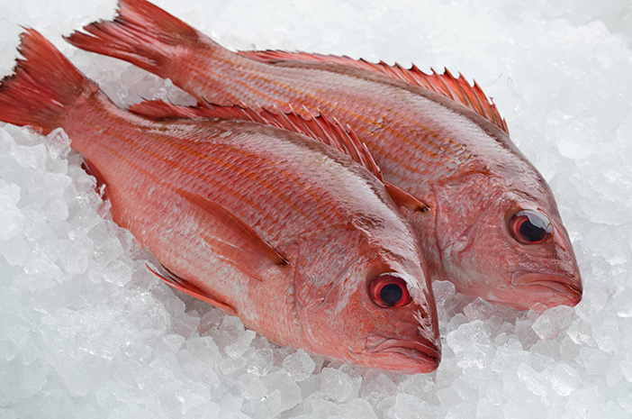
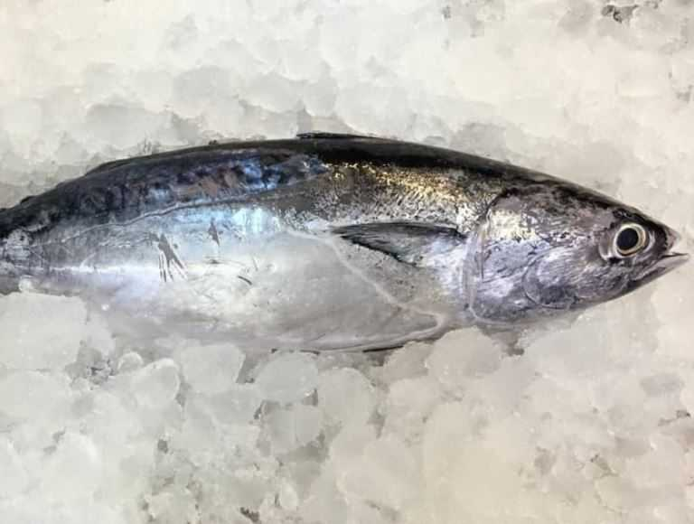
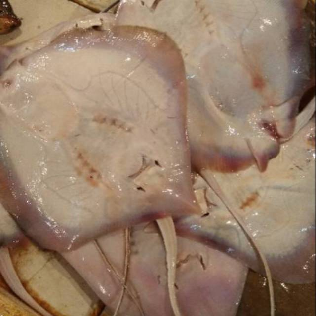
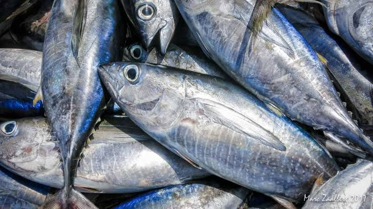
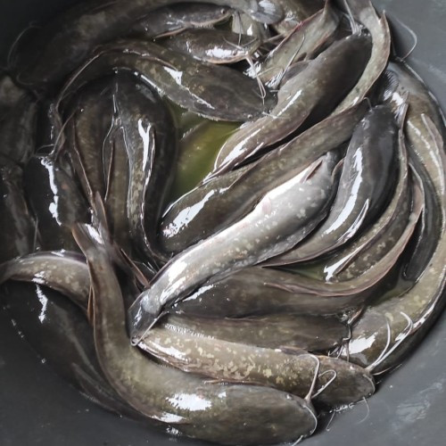
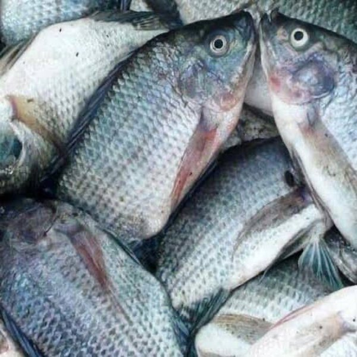

IKAN NUSANTARA
Ikan 4 lyfe

Ikan Kakap

Ikan Cakalang

Ikan Pe

Ikan Tuna

Ikan Lele

Ikan Gurame
Tentang Kami
UMKM Ikan Nusantara adalah sebuah usaha yang bergerak di bidang penjualan ikan segar. Kami menyediakan berbagai jenis ikan segar yang berasal dari perairan Indonesia, baik ikan laut maupun ikan air tawar. Kami juga memastikan ikan yang kami jual telah melalui proses penanganan dan pengolahan yang sesuai dengan standar keamanan pangan yang berlaku dengan harapan para pembeli/konsumen bisa merasakan banyak manfaat bagi kesehatan tubuh dari mengonsumsi ikan segar.